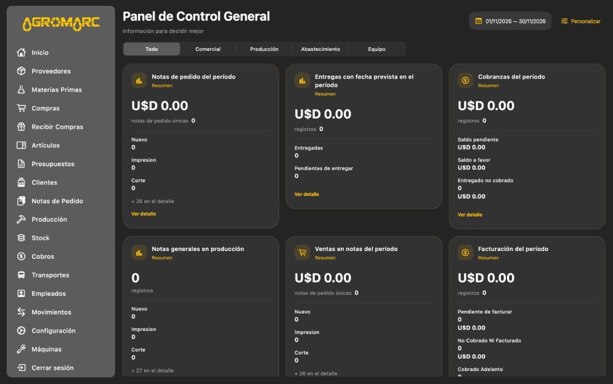
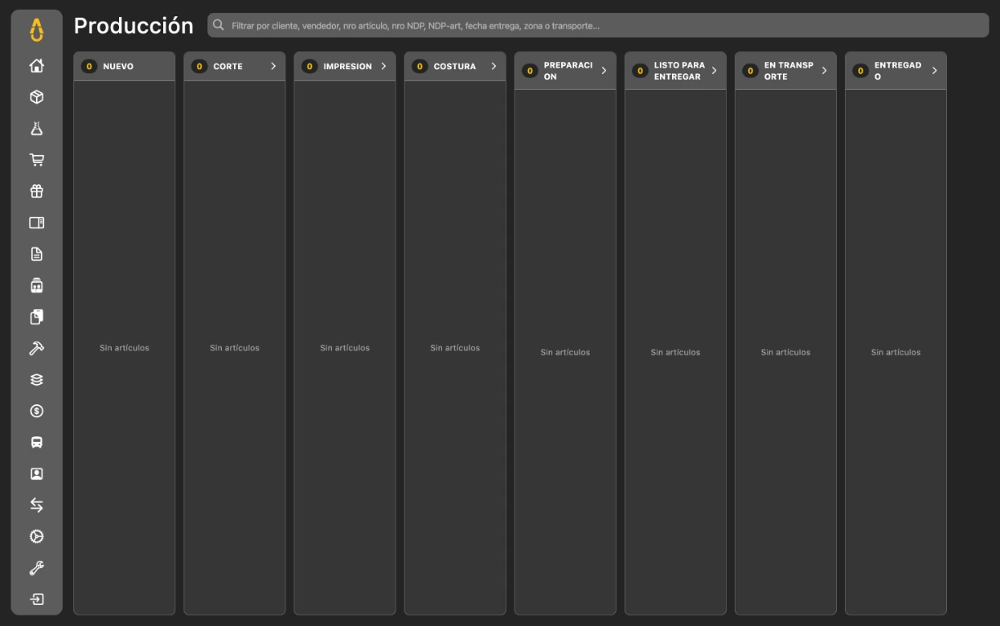
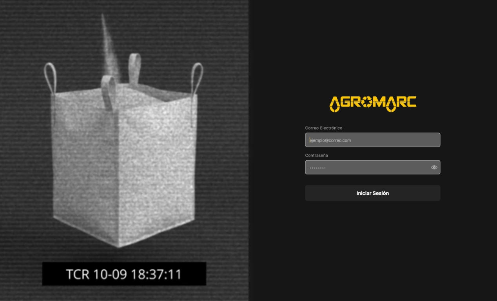

Ventas
Gestioná clientes, armá presupuestos y consultá tus notas de pedido.
Gestión industrial · App de escritorio
Organizá las ventas, el stock y el trabajo de planta en un solo sistema. Seguí cada pedido desde que entra hasta que sale.
Disponible para Windows y macOS

01 / Módulos
Gestioná clientes, armá presupuestos y consultá tus notas de pedido.
Registrá compras y recepciones. Consultá existencias y movimientos de materia prima por lote.
Seguí los pedidos por corte, impresión, costura y preparación, hasta que estén listos para entregar.
Organizá cobros, pagos, transportes y accesos del equipo según su rol y permisos.
02 / Capturas
Elegí una captura para verla en tamaño completo.


03 / Descargas
Elegí tu sistema operativo. Para usar la app necesitás una cuenta y acceso al servidor de tu organización.
Abrí el instalador y seguí el asistente. El paquete incluye los archivos que necesita la app.
Descargar para WindowsAbrí el DMG y arrastrá la app a Aplicaciones. Requiere macOS 12 o posterior.
Descargar para macOSEste instalador no está notarizado. macOS puede impedir que se abra.